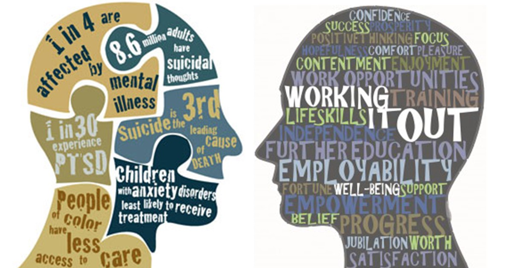

"You don’t have to control your thoughts. You just have to stop letting them control you."
Our application is mainly used to help people know about thier mental well-being and help them know it with small quiz.
Why mental health problems are increasing day-by-day?
After the lockdown things got little bit quirky and not easy to do for many of us.We don't want to socialize with others and make new connections.We don't want to share the feelings and thoughts to others so that our mental health got disturbed.
Yes, it’s important to remember that a person’s mental health can change over time, depending on many factors. When the demands placed on a person exceed their resources and coping abilities, their mental health could be impacted. For example, if someone is working long hours, caring for a relative, or experiencing economic hardship, they may experience poor mental health.
Click this link to check how your mental health is in a minute and get some idea about how well you actually are. Check your Mental Health